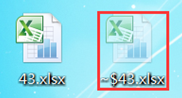
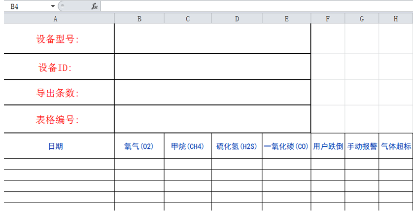
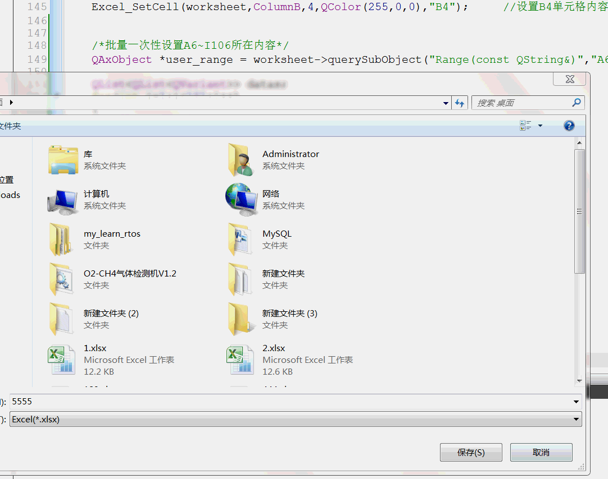

参考链接: https://blog.csdn.net/czyt1988/article/details/52121360
http://blog.sina.com.cn/s/blog_a6fb6cc90101gv2p.html
1. QAxObject介绍
在QT中,有个自带的QAxObject类,可以直接操作EXCEL
除此之外,当我们操作某个文件夹下的EXCEL的时候,都会在该文件夹下出现一个隐藏文件~$XX.xlsx,如下图所示:

此时,如果我们再用QAxObject去操作这个文件时,该文件是只读的,无法保存成功的,所以我们使用QAxObject时,需要提前判断一次.
2.示例
首先在项目下创建一个模板templatePath.xlsx文件

3.效果如下

4.写代码
#include <QApplication> #include "widget.h" #include <QtGui> #include <QAxObject> #include <QStandardPaths> #include <QFileDialog> #include <QFileDialog> /*excel操作*/ enum EXcel_ColumnType{ ColumnA = 1, ColumnB = 2, ColumnC = 3, ColumnD = 4, ColumnE = 5, ColumnF = 6, ColumnG = 7, ColumnH = 8, ColumnI = 9 }; QString saveas() { QString file; QString filter; //如果版本低于QT5,则需要将: // QStandardPaths::writableLocation(QStandardPaths::DesktopLocation), //改为:QDesktopServices::storageLocation(QDesktopServices::DesktopLocation), file = QFileDialog::getSaveFileName ( NULL, //父组件 "另存为", //标题 QStandardPaths::writableLocation(QStandardPaths::DesktopLocation), //设置路径, .表示当前路径,./表示更目录 "Excel(*.xlsx)", //过滤器 &filter ); return file; } //设置EXCEL中单个内容的数据 void Excel_SetCell(QAxObject *worksheet,EXcel_ColumnType column,int row,QColor color,QString text) { QAxObject *cell = worksheet->querySubObject("Cells(int,int)", row, column); cell->setProperty("Value", text); QAxObject *font = cell->querySubObject("Font"); font->setProperty("Color", color); } //把QVariant转为QList<QList<QVariant> >,用于快速读出的 void castVariant2ListListVariant(const QVariant &var, QList<QList<QVariant> > &res) { QVariantList varRows = var.toList(); if(varRows.isEmpty()) { return; } const int rowCount = varRows.size(); QVariantList rowData; for(int i=0;i<rowCount;++i) { rowData = varRows[i].toList(); res.push_back(rowData); } } //把QList<QList<QVariant> > 转为QVariant,用于快速写入的 void castListListVariant2Variant(const QList<QList<QVariant> > &cells, QVariant &res) { QVariantList vars; const int rows = cells.size(); for(int i=0;i<rows;++i) { vars.append(QVariant(cells[i])); } res = QVariant(vars); } int main(int argc, char *argv[]) { QApplication a(argc, argv); QString templatePath = "./template.xlsx"; QFileInfo info(templatePath); if(!info.exists()) { qDebug()<<"template.xlsx is NULL"; return 0; } templatePath = info.absoluteFilePath(); //获取模板的绝地路径 templatePath = QDir::toNativeSeparators(templatePath); //转换一下路径,让windows能够识别 QString ExcelFile = QDir::toNativeSeparators(saveas()); //打开文件保存对话框,找到要保存的位置 if(ExcelFile=="") return 0; QFile::copy(templatePath, ExcelFile); //将模板文件复制到要保存的位置去 info.setFile(ExcelFile); info.setFile(info.dir().path()+"/~$"+info.fileName()); if(info.exists()) //判断一下,有没有"~$XXX.xlsx"文件存在,是不是为只读 { qDebug()<<"报表属性为只读,请检查文件是否已打开!"; return 0; } QAxObject *excel = new QAxObject();//建立excel操作对象 excel->setControl("Excel.Application");//连接Excel控件 excel->setProperty("Visible", true);//显示窗体看效果 excel->setProperty("DisplayAlerts", false);//显示警告看效果 QAxObject *workbooks = excel->querySubObject("WorkBooks"); QAxObject* workbook = workbooks->querySubObject("Open(const QString&)",QDir::toNativeSeparators(ExcelFile) ); //打开 excel->setProperty("Caption", "Qt Excel"); //标题为Qt Excel QAxObject *work_book = excel->querySubObject("ActiveWorkBook"); QAxObject *worksheet = work_book->querySubObject("Sheets(int)",1); //获取表单1 Excel_SetCell(worksheet,ColumnB,2,QColor(74,51,255),"12345"); //设置B2单元格内容为12345 Excel_SetCell(worksheet,ColumnB,3,QColor(255,255,0),"B3"); //设置B3单元格内容 Excel_SetCell(worksheet,ColumnB,4,QColor(255,0,0),"B4"); //设置B4单元格内容 /*批量一次性设置A6~I106所在内容*/ QAxObject *user_range = worksheet->querySubObject("Range(const QString&)","A6:I106"); QList<QList<QVariant> > datas; for(int i=1;i<101;i++) { QList<QVariant> rows; for(int j=1;j<10;j++) { rows.append(i*j); } datas.append(rows); } QVariant var; castListListVariant2Variant(datas,var); user_range->setProperty("Value", var); workbook->dynamicCall("Save()" );
// workbook->dynamicCall("Close()"); //关闭文件 // excel->dynamicCall("Quit()");//关闭excel return 0; }
未完待续,下章学习Qtxlsx库操作EXCEL: https://www.cnblogs.com/lifexy/p/10743352.html